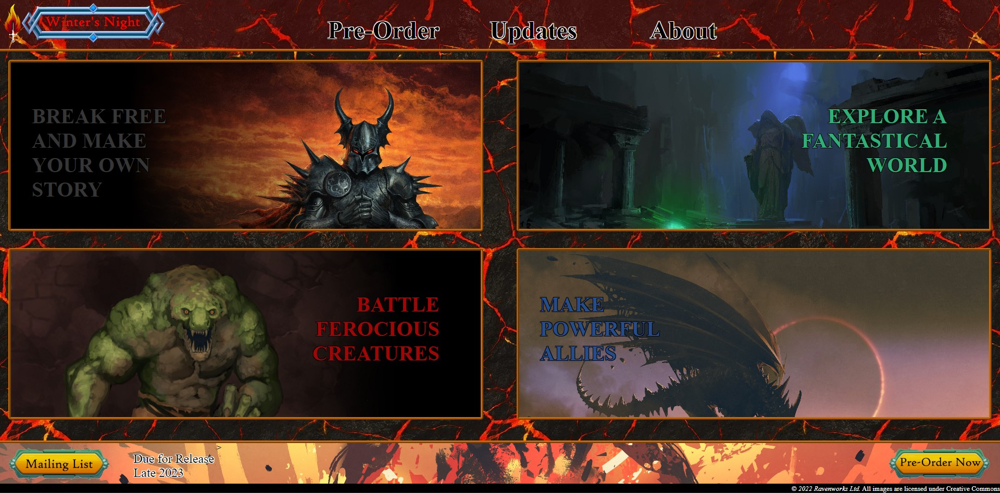

Web Development
Winter's Night
Designed and written as a showcase of technical skill and to demonstrate a thourough understanding of good UI principles. This site was submitted as a final assignment for my User-Centered Interface Design course, and earned an A+.
Intended to be the promotional site for a fictional video game, the site is comprised of over 1,100 lines of code. It was written in just under two weeks, due to frustrations with the lack of versatility in web site building services.
*Note: Since this was submitted as an assignment, the payment processing and newsletter sign-up features are intentionally non-functional.